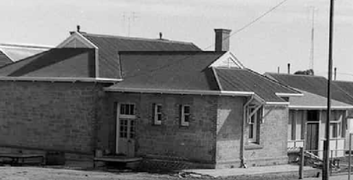
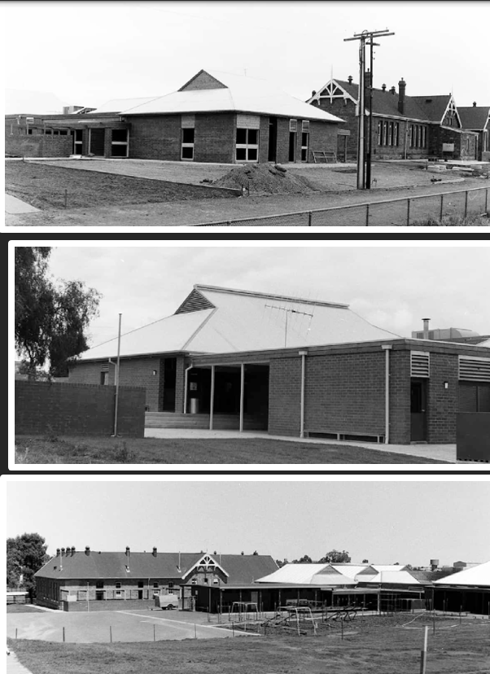

Primary School
From a single leased church room in 1881 to today's modern campus, Peterborough Primary School has grown alongside the town for well over a century. This history walk follows the overcrowding, additions, epidemics and celebrations that shaped the school, and the generations of students, teachers and committees who kept pushing for better facilities. Read about wartime fundraising, a tragic accident, decades of building works and the school's role as a temporary hospital. Photographs and clippings trace the changes right through to 2026.
As the town of Petersburg grew the need for a school was apparent.
The Union Church was leased by the education board, and an official school was opened in 1881.
The school was closed in April as the school master had disappeared. He had been seen in the neighbourhood, but it was reported that he was wandering around in a deranged state of mind. The council had been asked to appoint another as soon as possible. The school master was replaced by headmistress Miss Ellen J Arnold. The average attendance was less than fifty, with eighty-six school age children living within 3 ½ miles of the town.

Union Church
Photo - State Library of SA – Peterborough Collection Image B 61759
The church was proven to be too small for the number of children who were attending so the town residents lobbied to have a school built.
A public meeting was held on 29th October 1881 to discuss the wants of the town.
- An animated discussion ensued as to whether the site for the school was central enough. It was argued that the site was situated on high ground and in a healthy position and they had to look to the health of their children above all. It was estimated that there were now around eighty children who could attend school. The average attendance was between forty-five and fifty, and the old building could not possibly accommodate any more than already attended.
The government was spending nearly £3,000 on buildings including a new school, post office and police station and cells. £1,200 was for the new school which could accommodate eighty students, £850 for the police station and cells and £750 for the post office and telegraph station. The Board of Advice for the district has settled on allotments 241, 242, 243, and 244 in Petersburg North for the school. This land was purchased from Mr Rohde for £50.
Tenders for the government school at Petersburg were called for by Monday 9th May and Messrs. G. & W. Sara and Duncan’s tender of £1098-12 was accepted on 23rd May. Sara & Duncan of Kooringa also built the railway station in 1880.
The new Petersburg State School and a four roomed residence was completed in December 1882 and following a final inspection in March, Mr Inglis the head teacher and his students were able to move into the school building. The school had a capacity for 80 children.

Petersburg State School - 1883
Photo – Peterborough Library History Room
The enrolments of the state school had been around one hundred for the past four years and in 1887 they had increased to 150 pupils. Many cases of ophthalmia were reported and this had kept the attendance down to about 50. Mr Inglis, Mr Hardy and Miss Inglis (sewing and fancy work) had their hands full when all attended.
By 1891 the town population had increased and there were complaints made about the inadequate accommodation at the state school, as the attendance greatly exceeded the number of scholars the school could hold. The school year opened at the end of January with Mr D O’Leary, late of Georgetown as head teacher.
The Petersburg Council inspected the conditions at the state school. The school was originally built for 80 students and there were now nearly double that attending.
With the additions to the Petersburg State School still not forthcoming the increasing population of the town made the accommodation even more cramped. Many lessons were held outside, and sanitation was very low.
The overcrowded school had not had its promised additions, and in November 1891, the Petersburg Council decided to again communicate with the Minister of Education to try to resolve the matter.
The government agreed to arrange for a room to be used by the school to accommodate the children due to the overcrowding at the school. The council decided that the school could have use of the town hall for school purposes in the daytime.
Finally, by January 1892 the enlargement of the school was in progress, and the Education Department had rented a three-roomed house adjoining the school, for use until the additions were completed, rather than using the town hall. The additions of two classrooms which had progressed slowly would increase the capacity of students from 80 to 200.
The enlargements at the school had finally been finished and a building with two new classrooms had been added. The original room and teacher’s residence had not been repaired or improved since its erection and was still in a terrible state.
Although the school had been enlarged the outhouse had not.
The sanitary conditions of the outbuildings at the state school were still unacceptable in 1893. The attendance at the school had now reached 180 and they had been waiting for nearly two years for the promised enlargement.

Petersburg State School 1892
Peterborough Library History Room
Even with the additional building several years ago the conditions at the state school had not improved with overcrowding a major issue. The school buildings could accommodate 200 students and there were almost 300 enrolled. There were only three teaching staff at the school as the fourth teacher had left and was not replaced. Many parents were refusing to send their children as they feared their children’s health was in danger.
Dr Stevenson submitted a report on the Government School. According to the report “the school was overcrowded and the old part of the building badly ventilated, the air in the latter, on being tested showing 12 parts per 1000 of carbolic acid gas. The teachers and children frequently complained of headache and lassitude, which the Doctor altogether attributed to the crowded and unhealthy condition of the building.” - Petersburg Times, Friday 14 September 1894.
After many complaints at the overcrowding of the state school, tenders had finally been called for the erection of two additional classrooms in January 1897. The enrolments were about 430 students, and the accommodation was for about 250.
The long-awaited additions to the Petersburg State School had been completed and were opened on Monday 7th September 1897.
In 1898 a roomy play shed had been erected at the state school by Messrs Tuck Bros. This and the other additions made the previous year had greatly improved the accommodation at the school.
By the end of 1900 there were over 420 children enrolled at the school, with 411 sitting the public exam. Over 200 people attended a visitors day at the public school on Friday 12 October, and it was suggested to hold future open days in the town hall, to allow better viewing of the children’s exhibits.
The Mayor Mr Thomas Henry Chinner in his speech gave the boys of the school some very wise advice on not taking up cigarette smoking, and to be courteous and gentlemanly in their behaviour.
The visit of the Duke and Duchess of Cornwall and York to Australia in May 1901 saw the state school involved with a country wide ceremony of hoisting the Union Jack.
It was announced in December 1906 that continuation classes were to be established at Petersburg, Gawler, Moonta, Kapunda, Mount Gambier, Kadina and Port Pirie. Mr J Bills from the State School received a wire directing him to report to headquarters to test his qualifications to take charge in the projected continuation school. Forty pupils had signified their intention of attending.
An open day was held at the Petersburg State School on Friday 4th October 1907 with a large number of parents and friends attending. A splendid exhibition of fancy and other work was on view and unstinted praise was given for the children and teachers alike. There were 484 students enrolled and 341 of these undertook exams. 304 of these students were promoted, 33 of whom form the 6th Class, and it was hoped will qualify for the continuation class at the end of the year. The establishment of the continuation class, the formation of the school band and cadet corps were all great additions to the school. New classrooms were being built to accommodate the upper classes and would relieve the pressure of much needed accommodation.
After an eight year aggregation the additions to the state school of two classrooms and a new teacher’s residence had been completed in 1908. The school had 480 children on the roll and even with the new accommodation the school was almost taxed to its full capacity. The additions were declared open by the Treasurer (Hon AH Peake) accompanied by the Commissioner of Crown Lands and members for the district. The two new rooms were for the continuation class which would be known as a district high school.
The old head teachers house had been demolished after the new one was built.
An outbreak of measles in 1910 saw 170 students out of 432 absent at one time. The school had had several improvements, such as the decoration of the walls and the removal of window frosting, to make the rooms light and bright. The school band had been reformed and was hoping to purchase a side drum. Several wants were the renovation of the infant room piano, and establishing a school library, of which parents were invited to contribute books. It was hoped to establish a savings bank at the school for the children from the third grade up to deposit their pennies in.

Original Petersburg State School building built in 1883 with the additional two classrooms for the High school class and new teachers house built in 1908
Photo – Lionel Noble Collection
At the suggestion of the Prime Minister, Australia Day was to be celebrated on 30 July 1915, to raise a fund to provide comfort and nursing assistance for the men fighting at the front in the war. Petersburg chose to celebrate over two days: Friday 30th and Saturday 31st July. On Friday a pageant headed by the mounted police and brass band, followed by the mayor, councillors, cadets and over 600 schoolchildren, along with the Petersburg State School Fife and Drum Band started the proceedings. This was followed by an auction of goods for the Red Cross Society in the Auction Mart. Pictures were shown in the town hall and the ladies supplied afternoon tea in the hall annexe and sweets in the town clerk’s office.
The celebrations continued on Saturday with a procession starting from the loco shed and wound its way to the showgrounds. All money raised was to be given to the Wounded Soldiers Fund in South Australia.
In 1916 the school age limit had been changed and children between the age of six and fourteen were required to attend. Children under the age of 14 received free tuition.
ANZAC day was celebrated at the Public School for the first time on Thursday 20 April 1916.
The playground at the public school had been unusable since the building of the drain in 1915 and the children had not been able to use it. The Minister for Education (Hon Mr Harvey) visited the school on Wednesday 23rd October 1918 and he stated that he would find funds to rectify the problem. There was no drainage and the ground was often no more than just slush and mud.
The school committee also asked about having shorthand and typewriting taught at the high school, as scholars from the school had no chance to enter the examination for the clerical division of the railways unless they were conversant with those subjects.
18 new cases of influenza had been reported by the medical officers to the Local Board of Health in the past 3 days since Saturday 5th April 1919. The public school had been closed to use as a temporary hospital by Board. A hospital had been set up at the school and six patients were removed there on the morning of Tuesday 8th April. Twenty beds had been provided and more patients would be admitted as soon as arrangements were complete. Dr Arnold reported that all the cases were mild so far. The mayoress, with a band of willing women workers, had prepared a huge parcel of necessaries for the hospital, and were busy making more. St Joseph’s School and the Sunday schools were all closed as a precaution.
The Board of Health closed the temporary hospital at the public school on 6th May as the town was free of influenza. The school was disinfected and lessons restarted on 13th May.
The Hon LL Hill (Minister for Education), the Director of Education, the Superintendent of Primary Education and the Federal and State Members of Parliament visited Peterborough and were tendered a civic reception by the corporation on Friday 27th March 1924. A public address in the town hall in the evening was attended by a large number of the public. On Saturday morning the visitors inspected the site of the new high school and the remodelling of the primary school.
The remodelling of the state school had been given the go ahead and arrangements had been made by the Education Department to temporarily transfer the high school students to the Methodist Sunday School Hall where they would rent the hall and two classrooms in 1926.
A school fete organised by the Mother’s Association which had recently been established, was held in 1928 to raise money to improve the grounds at the school to erect swings and to make an ideal playground for the children. Building a bike shed was also mentioned.
Finally the long awaited improvements were completed and classrooms were renovated. Mr RL Davies of Jamestown had been accepted by the government for the tender of repairs and renovations of the school in March 1929.
Kingsley Buzza (five and a half year old son of Mr David Buzza, council employee) was killed after he crossed over the footbridge over the drain near the school on 28th June 1929 and was run over by a bakers cart. His neck was broken in the collision and was dead on arriving at the hospital.
After verification of Council’s legal authority it was decided to close the dangerous road in front of the Primary School.
In 1930 the Commissioner of Highways had confirmed that his department would bear half costs of erecting a bridge over the drain on Government Road and would be prepared to loan the Council the other half on terms of three or five years at 6 per cent. The Council had been trying to get the District Council of Yongala to pay a half of their portion of the bridge as one side of Government Road was in their district. The Government Road was the only road crossing the drain that did not have a bridge and since the closing of the road in front of the school the Council felt it was a Government matter entirely.
In 1930 there was an enrolment of 477 students at the Primary School.
Visiting day was held at the primary school on Friday 11 December 1931 and included sports, a parade of decorated vehicles and bicycles, marching and a pet show. The pet show became an annual event, running well into at least the 1990s.
At the pet show held by the Mother’s Association on the primary school grounds on Saturday 27th April 1935, so numerous were the entries in the dog section it appeared that every dog in the town had been brought to the school. The school fife and drum band marched through the streets prior to the opening ceremony, which was performed by Mrs SD Jones (president of the association). A fancy dress parade was held and all sections of the pet show were represented.
Minister for Education (Mr Jeffries), Director of Education (Mr Adey) along with Messrs Jenkins, Melrose and McDonald (MPs) inspected the primary school on Friday 22nd February 1935 and met with the school committee. A deputation asked for increased accommodation and pointed out that repairs were urgently needed to the grounds.
The Minister said that of the two proposals he preferred separate rooms for the infants as against the building of the stories. Further accommodation was essential. The matter would be gone into carefully. The Advertiser – Saturday 23rd February 1935.
The new Infant’s classroom at the Primary School was opened by the Minister of Education (Mr CS Jeffries), on Friday 21st August. The building consisted of a large hall, divided into two classrooms by folding doors, with another classroom, large enclosed verandah and broom room on the north side. Afternoon tea for the official party was supplied by the Mothers’ Association.

Infant Classroom - 1975
Photo – Lionel Noble Collection
In 1937 the primary school sought council’s permission to lay a cricket pitch on the school flat, which was the corporation’s property. Permission was granted and metal was supplied for the construction of the pitch.
Ownership of the flat which was used as a playground by the primary school was given to the education department in 1939, by the council on the condition that it was fenced.
The Minister of Education (Mr Jeffries) and the Director of Education (Dr C Fenner) held a meeting in April 1940 with teaching staff and associated committees of the high school and primary school and surrounding schools with the view of establishing an area school. They explained that it would give better education facilities for the children from smaller schools in the area, and daily transport would be provided. This proposal was rejected.
Finally in October 1940 at the request of the council, Mr Siebers (Assistant Engineer) of the highway department inspected the very dangerous corner of Government Road and Bridges Street. The councils request for a bridge was granted and he recommended that a timber bridge be erected at this particular corner. £100 was granted for the construction of a wooden bridge, and construction started in July 1941.
The enrolment reached 522 in 1937 but during the war dropped to 265. The enrolment was at a high in 1956 with 600 students enrolled. There are now under 40 students at the school.
A library was finally opened at the school in December 1943. A photo of Mr GH (Heinie) Koch who had been a member of the school committee for 23 years and chairman for 16 was unveiled and proudly hung on the library wall.
The toilet block was upgraded in 1968 as the closure of several small schools in the area forced an issue that had been long overdue. This also highlighted the condition of the school with lack of heating and no cooling. It was recorded that the temperature in Mrs Clune’s room reached 105° Celsius in February 1963.
A push to have the school upgraded saw a proposal from the education department to build a new administration and library block. This would also include a new staff room to replace the iron lean-to that staff had been using at the time.
An inspection of the school in 1971 by the Minister of Education, Mr H Hudson accompanied by the school committee, saw a very animated discussion on the needs of the school. The minister voiced his dismay at the conditions at the school and agreed that action would be taken when funds were available.
It was then suggested by the education department that the primary school be moved to the south side of the town, closer to the facilities at the high school rather than update the cramped, and untidy campus the school had become, with the additions of prefab classes over the years.
In November 1972 the school was inspected by the Public Works Standing Committee and approval was given for a rebuild of the school at a cost of $430,000.
Plans of the makeover for the school showed converted stone buildings into open space classrooms, along with the addition of an administration block, library, activity room and additional classrooms. Not all were convinced that this was the right plan and many suggestions were discussed. Some of these ideas were incorporated into the design. The plans did not include air-conditioning which was one of the committee’s wants. This was later included.
In February 1974 renovations started at the primary school. Demolition of prefabricated classrooms and the principal’s house went ahead before the building of a new administration building and library, activity room and two open space units. The old original buildings were extensively renovated into ‘open space’ and air-conditioning was installed. Bakers house in Chinner Street remained and was used as a classroom during the building phase and then used as an extra area. The community used the house for meetings.
The official opening of the new building complex at the primary school was performed on Thursday 14 October as part of the Peterborough Centenary Celebrations.
The Peterborough Community Kindergarten was relocated to the building previously known as the ‘infant’ rooms at the northern end of the primary school in June 2005. A bathroom was added with small sized toilets and nappy changing facilities along with washing machine and drier.
The building was officially opened on Monday 8 August by Grahan Gunn and Terry Sizer. Rural care services started in October 2005 replacing the previously known occasional care at the kindy. The kindy is now known as the Peterborough Community Preschool and Rural Care.

Classrooms near Victoria Street - 1976
Photo – Lionel Noble Collection